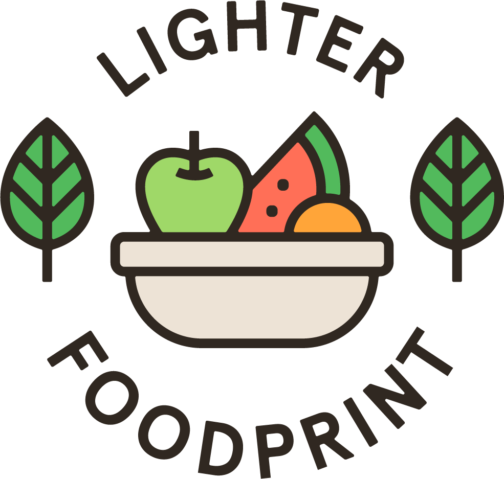

Foodprint refers to the environmental impact created by our demand for food. Food is part of our everyday lives and our food choices are crafted by our habits and culture. It is something shared and exchanged. This is why lowering our foodprint often requires shared efforts and collective action. Here are some tips for how you can lower your foodprint:
We are always seeking to connect with like-minded businesses in the community. We are currently seeking pilot partners, so please let us know where you'd like to see climate labels! Leave us a note on our contact form !
Restaurants highly value and are attentive to feedback from their customers. This is a simple, yet direct way to help the cause! Here's a handy blurb to reach out to your favourite restaurants and give them feedback that you'd like to see climate labels on their menus.
That’s awesome! Please reach out and contact us .
From there, our team will reach out to set up a time for a call to learn more about your organization’s needs. We will then send over a custom proposal with a timeline. Once that looks good to you, we’ll get to work! After we finish the project, we will provide a business and/or sustainability report on the impact of our work.
